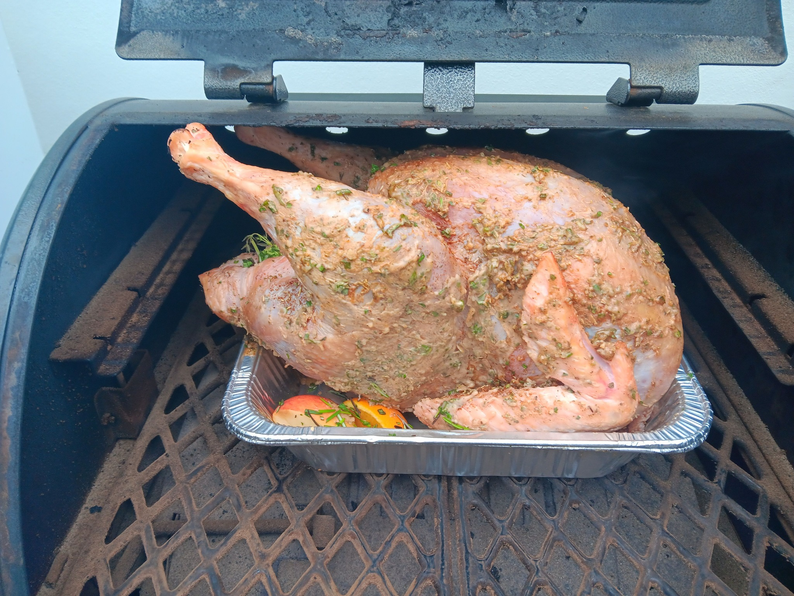
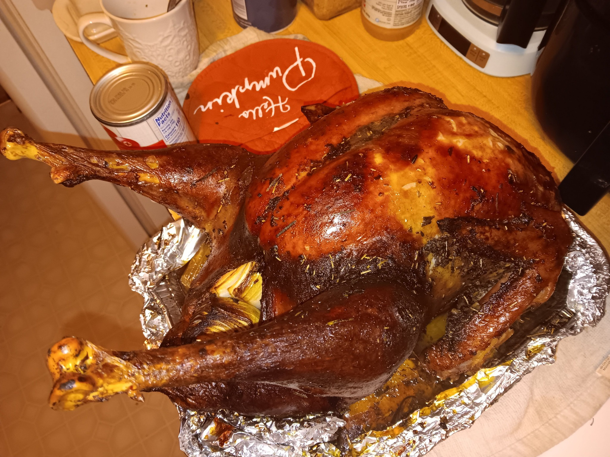

Smoked Turkey


Description:
This savory smoked turkey is sure to blow your next Thanksgiving dinner out of the water!
Ingredients:
- Turkey Brine
- 10-15 pound Whole Turkey, giblets and neck removed
- My All Purpose BBQ Rub
- 1 Stick of Butter
- 1 Onion, quartered
- 1 Lemon, quartered
- 1 Apple, quartered
- 1 Orange, quartered
- 3 Whole Cloves of Garlic
- 2 Sprigs each of Thyme, Rosemary, Sage and Parsely
- Apple Juice
- Orange Juice
- Cooking Spray or Lard
- Kitchen Twine
Steps:
- Prepare the turkey brine according to the linked recipe. Allow the entire turkey to soak in the brine for 18-24 hours before smoking
- Next day, remove turkey from the brine and pat dry with paper towels
- Preheat your smoker to 250 degrees F. Once again, I prefer a hickory/apple wood mix for turkey but any wood will work
- Coat a large disposable pan with cooking spray or lard and place the turkey in the pan, tucking the wings under the body
- Stuff the cavity with the onion, lemon, apple, orange, garlic and 1 sprig of each herb. Use kitchen twine to tie the legs together
- Melt down the butter and apply generously to the entire surface of the turkey
- Sprinkle the rest of the herbs and some bbq rub all over, gently rubbing into the skin
- Place turkey into the smoker and smoke for 5-6 hours (or until a meat thermometer reads 165 degrees F at the thickest part), basting with an apple/orange juice mixture every hour or so to prevent drying out
- If the turkey begins to get too dark, cover with foil and continue to smoke
- When turkey reaches the correct internal temperature, remove from smoker and let rest for 20 minutes
- Transfer to serving plate, slice and enjoy!